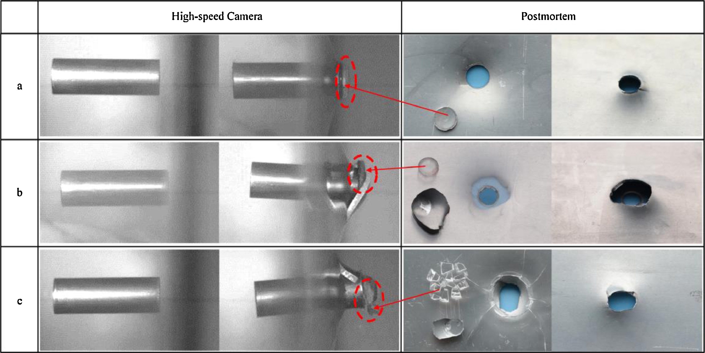

"My research develops unified data-driven frameworks that bridge experimental mechanics, computational modeling, and machine learning — applied across material constitutive behavior under extreme loading, structural impact performance, and the mechanical-electrochemical safety of lithium-ion batteries."— Dr. Xianglin Huang

Constitutive
Modeling
Pioneering SVD/CP tensor decomposition and ANN frameworks to determine dynamic flow stress directly from discrete SHPB data — rigorously verifying and extending the Johnson-Cook equation paradigm. Three consecutive first-authored papers in IJIE establish a complete methodology from mathematical foundations to full three-dimensional (strain × strain-rate × temperature) characterization.

& Ballistic
Performance
Experimental and computational investigation of ballistic impact phenomena across multiple material systems and loading configurations. AI-driven predictive models for ballistic limit velocity and residual velocity — using the same ANN+SVD/CP methodology developed in constitutive modeling — generalized to multi-parameter impact scenarios.

Safety & Health
Management
Bridging impact mechanics expertise with electrochemical safety science — investigating failure modes and energy thresholds of LIBs under impact loading, building deep learning systems for real-time health monitoring via acoustic emission, and developing multiphysics FEM models coupling structural damage with electrochemical degradation.
Crosscutting Methodology: AI-Driven Mechanics
Across all three research areas, a unified computational methodology connects the work: artificial neural networks (ANN) combined with singular value decomposition (SVD) and CANDECOMP/PARAFAC (CP) tensor decomposition. Originally developed for constitutive modeling, this framework has been generalized to ballistic impact prediction and now to battery damage assessment — demonstrating the broad applicability of data-driven mechanics.